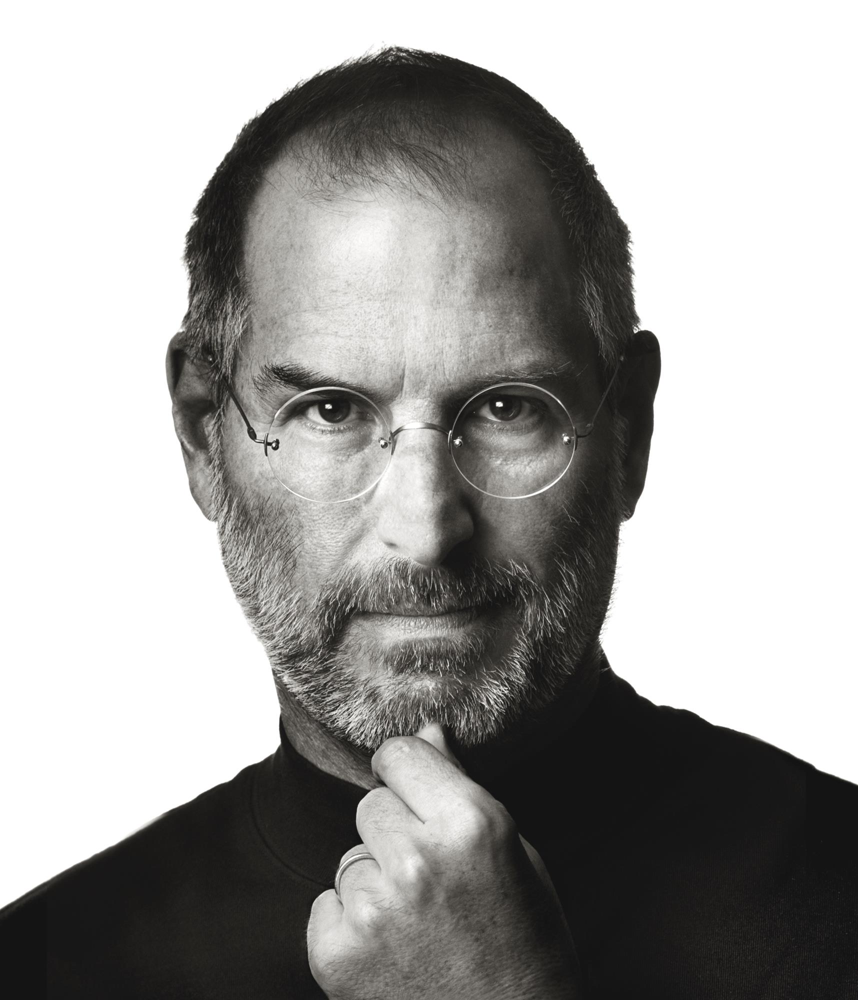

Steve Jobs
(1955 - 2011)

Steve Jobs Portrait
Timeline
- 1975 - Steve Jobs builds first Apple I in his bedroom.
- 1976 - Apple Computers is founded.
- 1977 - Apple II released with colour graphics.
- 1982 - Jobs features on the cover of Time Magazine.
- 1984 - Apple launches the Macintosh computer.
- 1997 - Becomes CEO, initially as the de facto chief, then as interim chief in September.
- 1998 - Introduces the iMac, which becomes commercially available in August.
- 2001 - Introduces iTunes on January and iPod on October.
- 2004 - Jobs undergoes surgery to remove a cancerous tumor in his pancreas.
- 2009 - Jobs takes a 6-month leave of absence for medical reasons.
- 2011 - Resigns from Apple CEO post; becomes chairman.